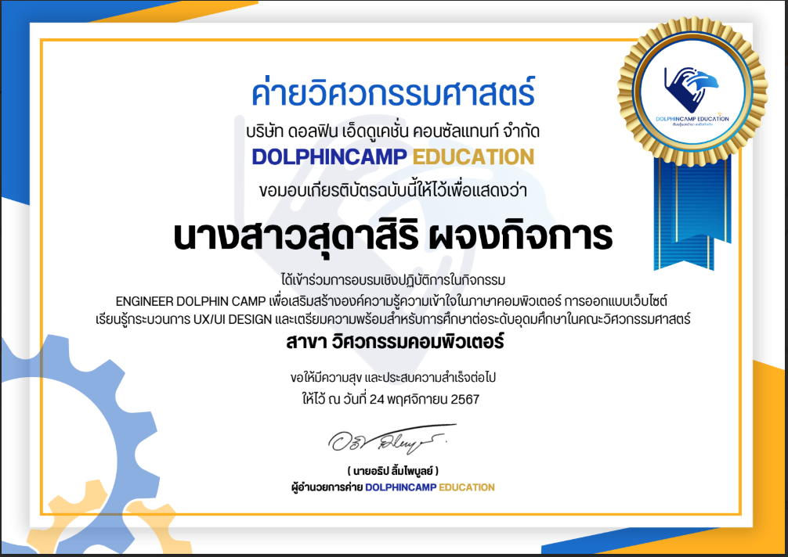
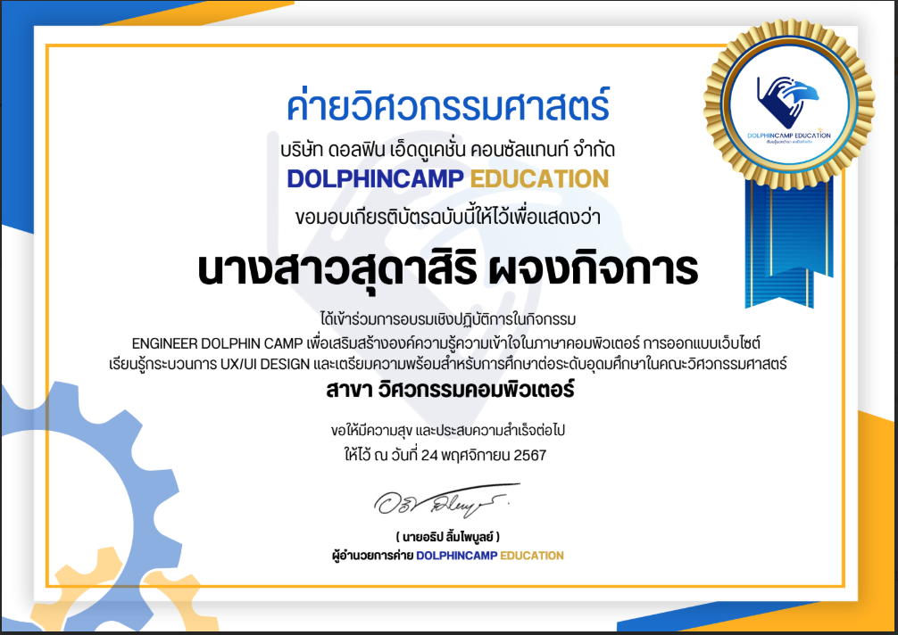
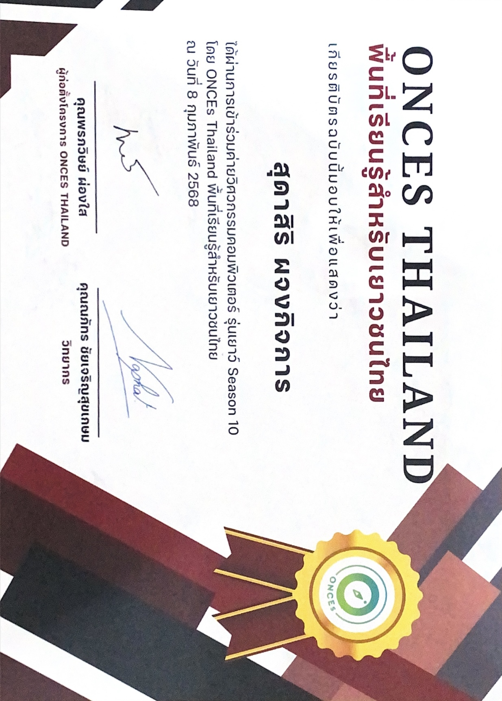

เกียรติประวัติ
 

Dolphin camp 67
เป็นค่ายที่จัดขึ้นที่มหาวิทยาลัยสงขลานครินทร์เป็นเวลา 7 วัน 6 คืน (ค่ายค้างคืน) เป็นค่ายที่วิชาการ ที่จัดขึ้นในธีมค่ายทหาร ที่เน้นเกี่ยวกับความรู้ทุกอย่างที่เกี่ยวกับวิชาภาควิศวกร ในทุกสายวิชา โดย มีการจัดสอบระหว่างค่ายเพื่อวัดความรู้ เเละการสอบอีกครั้งในวันสุดท้ายของค่าย เพื่อรวมเเละเก็บคะเเนนทืั้งระพหว่างการอยู๔่ในค่าย การทำงานส่ง เเละคะเเนนสอบทั้งหมด เเละนำมาเฉลี่ยเป็นเกรด

IGL intania CAMP 11
เป็นค่ายที่จัดขึ้นเพื่อให้นักเรียนในสายวิทย์คณิตได้เรียนรู็ประสาบการณ์เพิมเติมเเละค้นหาตัวตนในความชอบเเละความถนัดทางสายการเรียนต่างๆ โดยกิจกรรมจัดขึ้นเป็นเวลา 1 วัน ซึ่งมีพี่ๆ วิทยากรที่มีความรู้เเละประสบการ์ณเป็นผู้อบรมเเละพาเข้าช้อปต่างๆ